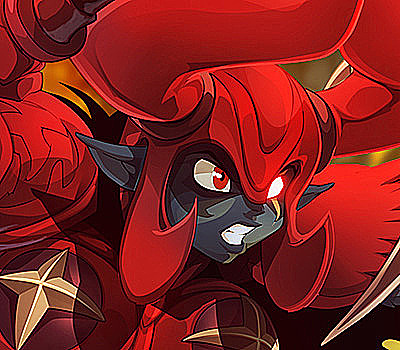
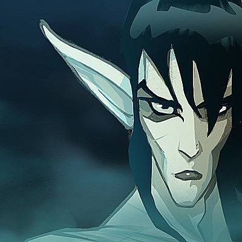
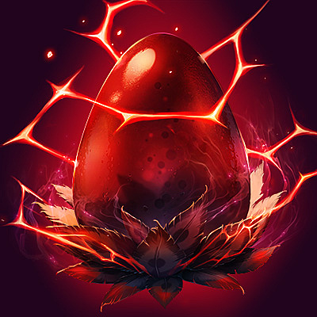
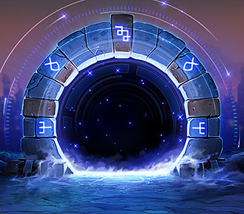

Datos de interés.
Dofus dispone de una página web propia, donde se puede consultar información tanto del propio juego como sobre los personajes que tiene la gente.
Enlace a la página de Dofus
También disponemos de las redes sociales en la esquina inferior derecha de la página.
Ciclos de actualización.
Dofus es un juego online, y como tal se va actualizando constantemente.
El ciclo de actualizaciones de éste videojuego suele rondas las 6 actualizaciones por año, a un ritmo de 2 actualizaciones por trimestre.
Actualización 2.56 :
El despertar de Pandala
15 de Julio de 2020
Actualización 2.54 :
Los 4 Jinetes del Selocalipsis
11 de Diciembre de 2019

Actualización 2.53 :
El Maestro de los Sueños
01 de Octubre de 2019

Actualización 2.52 :
La Venganza del Dragón Emplumado
02 de Julio de 2019

Actualización 2.51 :
Selocalipsis: Resonancia
09 de Abril de 2019
